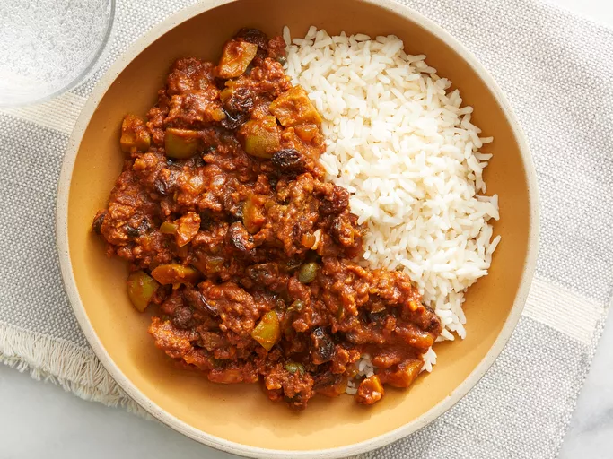

Cuban Style Picadillo

Description
This is a classic Cuban picadillo recipe for ground beef that is typically eaten over white rice. It can also be
used as a filling for tacos or empanadas. It's delicious with fried ripe plantains.
Ingredients
-
1 tablespoon olive oil
-
1 small onion, chopped
-
½ green bell pepper, chopped
-
1 pound lean ground beef
-
1 (8 ounce) can tomato sauce
-
6 large pitted green olives, quartered
-
½ cup raisins
-
1 tablespoon capers (Optional)
Steps
-
Heat olive oil in a skillet over medium heat; cook and stir onion, bell pepper, and garlic, onion in the hot
oil until softened, 5 to 7 minutes.
-
Add ground beef into the skillet; cook and stir until crumbly and completely browned, 7 to 10 minutes.
-
Stir tomato sauce, olives, raisins, capers, cumin, sazon seasoning, sugar, and salt into the ground beef
mixture. Cover the skillet, reduce heat to low, and cook until the mixture is heated through, 5 to 10
minutes.